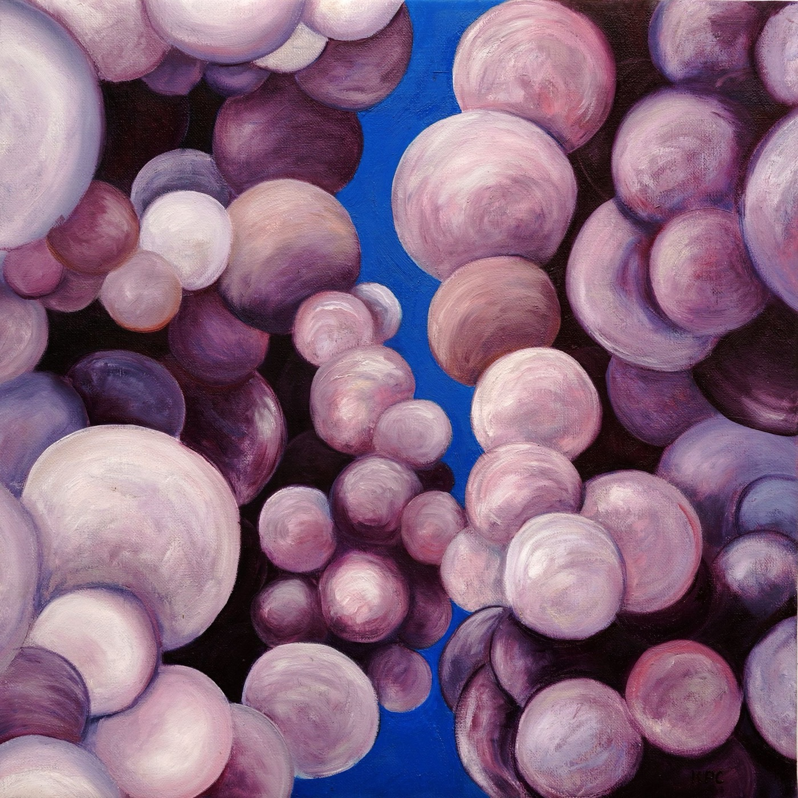

Believing in a future is not the same thing as living through a future — an archive kept in the present tense, organised by discipline and year.

What the sky keeps and what it lets go. A season of weather paintings, a press run in the dark, and the slow work of photographing twenty years of missing panels.
Enter the edition →